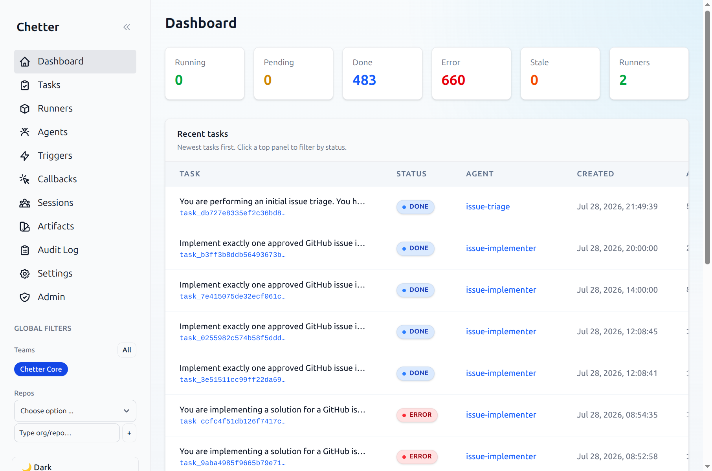
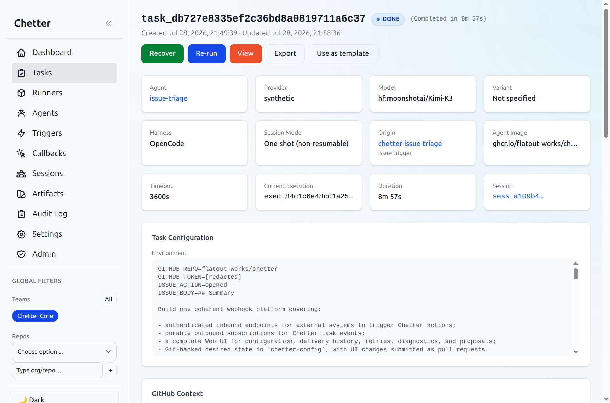
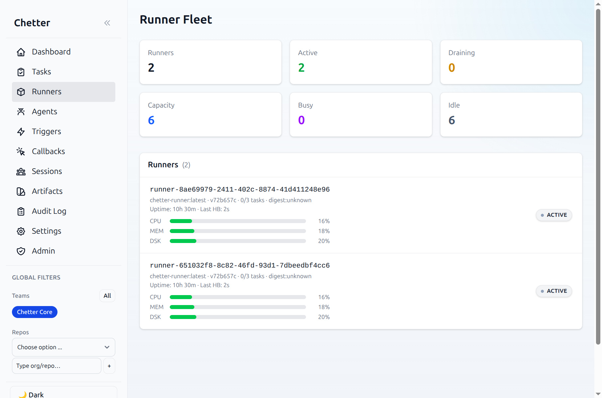
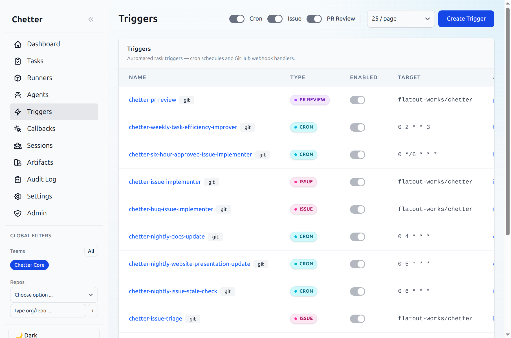
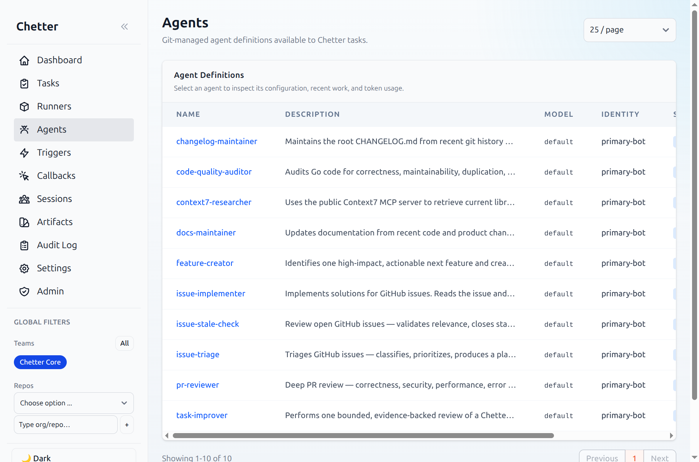

Run autonomous coding agents on your own infrastructure.
Chetter is a control plane for AI coding agents, written in Go. One server binary. One SQL database. Plain Docker containers. It drives the harnesses you already use — OpenCode, Claude Code, Codex, Pi, CodeWhale — and orchestrates work through the GitHub primitives you already know: PRs, issues, reviews, comments.
$ git clone https://github.com/flatout-works/chetter.git $ cd chetter && cp .env.example .env # set CHETTER_MCP_AUTH_TOKEN + one LLM provider key $ ./deploy/build.sh $ docker compose --env-file .env -f deploy/compose.yaml \ -f deploy/compose.local.yaml up -d # mcp server → http://localhost:18088 # web ui → http://localhost:18090
Why it exists
Hosted agent platforms want your code, your credentials, and a monthly bill.
Chetter was built as a reaction to platforms that are not open source, want to host your agents, require exotic infrastructure like Firecracker VMs, or replace standard tooling with a custom agent runtime. Chetter takes the opposite position on every one of those points.
| Hosted agent platforms | Chetter | |
|---|---|---|
| Source code | ✗ Closed, or partially open | ✓ MIT, full stack |
| Execution | ✗ Their cloud, their sandbox | ✓ Your Docker or Kubernetes |
| Infrastructure | ✗ Firecracker / proprietary VMs | ✓ Ordinary containers, optional gVisor |
| Agent harness | ✗ Custom runtime you can't reuse | ✓ OpenCode, Claude Code, Codex, Pi, CodeWhale |
| Workflow | ✗ Their dashboard, their API | ✓ GitHub PRs, issues, reviews, comments |
| Secrets & code | ✗ Leave your network | ✓ Never leave your network |
If you believe the future of software development should be under your own control, this is the trade.
Design principles
Deliberately boring technology, composed well.
These are not marketing values. They are constraints the codebase is held to.
True open source
MIT licensed, no hosted Chetter service, no paid tier with the good parts removed. Clone it, run it, keep the execution path under your control.
Standard harnesses
Agent execution is delegated to existing CLI tools. No custom agent runtime — an autonomous agent should be built with the same tools you use as an individual developer.
Docker or Kubernetes
Server and runners deploy on standard container infrastructure. No special hardware, no custom AMIs, no kernel patches. gVisor is there when you need a hard security boundary.
GitHub-native orchestration
Agents open PRs, triage issues, post reviews, and commit with managed Git identities. The same primitives your team already uses, with auditable artifacts.
Plain containers as environments
The agent runs in a normal Docker image. You define the tools and stack your project needs — language toolchains, CLIs, whatever the job requires.
API and MCP first
Every capability is a ConnectRPC endpoint, also exposed as an MCP tool. The web UI exists for observation and admin — it's a client of the API, not a gatekeeper.
What you get
The spec sheet.
No feature-page adjectives. This is what the system actually does.
- Task queue
- Just SQL. SELECT … FOR UPDATE SKIP LOCKED, 60-second database leases, heartbeats, and a reaper that reclaims dead runners' work every 30s. No broker to operate.
- Automation
- Cron triggers, generic webhooks, GitHub PR-review and issue triggers. Definitions can live in a Git repo and sync every five minutes — agents, skills, triggers, model catalogs.
- Sessions
- Pause an agent mid-task and resume it later on the same runner. Recover timed-out sessions with full context. Re-run any terminal task with one click.
- Models
- Bring any provider — OpenAI-compatible, native, AWS Bedrock, LiteLLM routers. A data-driven catalog maps providers to harnesses. No code changes to add a model.
- Isolation
- gVisor (
runsc) is the sandbox — a userspace kernel intercepting every syscall; plain Docker is not a boundary against a malicious task. A transparent HTTP + DNS proxy filters outbound egress by domain allowlist. - Operations
- Full audit log, per-task event streams, token & cost summaries by team/trigger/repo, structured failure categories, runner fleet health with CPU/mem/disk utilization, and live per-task execution telemetry on the task detail page.
- Database
- TiDB, MySQL, or PostgreSQL — auto-detected. Zero-downtime auto-migrations on startup plus Goose for explicit schema changes.
- Clients
- Any MCP client (OpenCode, Claude Code, …), the
chetterctlCLI, or the web UI. Connect from your editor and submit a task without leaving it.
How it works
One control plane, many disposable runners.
The server owns state. Runners own execution. The whole lifecycle fits in six steps.
1. SUBMIT MCP call, cron, or GitHub webhook inserts a task row. You get a task id back immediately. 2. QUEUE Task sits in the database as pending, with team, model, timeout, and repo metadata. 3. CLAIM Runners poll over ConnectRPC. One wins the row lock + lease; two runners never run the same task. 4. PREPARE Winner clones the repo, writes agent/skill definitions, resolves MCP endpoint credentials. 5. RUN The harness starts in a container from your agent image, on an isolated network. 6. REPORT Events, heartbeats, token usage, and artifacts stream back. Done, error, or recoverable.
See it running
The web UI is for watching, not for clicking through wizards.
Real screenshots from a production Chetter instance. It runs its own issue triage, implementation, docs, and changelog maintenance.





Use it
Connect the client you already have.
Chetter is a standard remote MCP server. Point your AI client at it and submit tasks from your editor.
# Claude Code $ claude mcp add --transport http chetter \ https://chetter.example.com/mcp \ --header "Authorization: Bearer $TOKEN" # OpenCode: built-in config at .opencode/opencode.json # Any other MCP client: standard remote server format